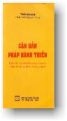

|
BuddhaSasana Home Page |
Vietnamese, with Unicode Times font |
|  |
THERAVĀDA CĂN BẢN PHÁP HÀNH THIỀN Nguyên tác: The Basic Method
of Meditation |
---- *----
---- *---- Vài nét về tiểu sử Thiền sư Ajahn Brahmavamso
---- *---- CẢM TẠ
NAMO TASSA BHAGAVATO ARAHATO SAMMASAMBUDDHASA CUNG KÍNH ĐẢNH LỄ ĐỨC THẾ
TÔN, PHẦN 1
Thiền là đường lối để thực hiện sự buông bỏ. Khi hành thiền, ta buông bỏ thế giới phức tạp bên ngoài, để có thể vươn đến thế giới an nhiên bên trong. Trong tất cả các hệ thống huyền học và trong nhiều truyền thống, hành thiền được biết đến như là con đường đi đến tâm thanh tịnh và uy lực. Kinh nghiệm về tâm thanh tịnh này, giải thoát ra khỏi thế giới, rất là vi diệu và hỷ lạc. Thông thường khi hành thiền, có nhiều việc khó khăn cần phải làm, nhưng các bạn nên quyết tâm chịu đựng các sự khó nhọc đó, vì chúng sẽ giúp các bạn thể nghiệm được những trạng thái tuyệt vời, đầy ý nghĩa. Chúng rất xứng đáng cho những nỗ lực của chúng ta! Quy luật tự nhiên là nếu không có nỗ lực, ta không thể tiến bộ được. Dù là cư sĩ hay là tu sĩ, nếu chẳng nỗ lực thì chẳng đi đến đâu cả, trong việc hành thiền, hoặc trong bất cứ việc gì khác. Tuy nhiên, chỉ riêng nỗ lực thôi, cũng chưa đủ. Nỗ lực cần phải khéo léo. Điều này có nghĩa là bạn hướng năng lực vào đúng chỗ, duy trì năng lực đó cho đến khi công tác được hoàn tất. Nỗ lực khéo léo chẳng hề gây trở ngại hay quấy rối bạn; ngược lại, nó sẽ tạo ra sự an tĩnh tuyệt vời của mức thiền định thâm sâu. Để biết phải hướng nỗ lực đến nơi nào, bạn cần phải hiểu thật rõ ràng mục tiêu của việc hành thiền. Mục tiêu đó là sự tĩnh lặng vi diệu, sự an định và trong sáng của tâm. Nếu bạn hiểu được mục tiêu đó, bạn sẽ thấy rõ ràng nơi mà bạn cần hướng nỗ lực đến, và biết rõ phương tiện nào dùng để đạt mục tiêu đó. Nỗ lực đó phải hướng về sự buông bỏ, về sự phát triển một tâm trí sẵn sàng xả ly. Một trong các lời dạy giản dị nhưng sâu sắc của Đức Phật là, "Một hành giả có tâm hướng về sự buông bỏ, sẽ dễ dàng đạt đến Định (Samàdhi, phiên âm là Tam-ma-đề)". Hành giả đó đắc được, gần như tự động, các trạng thái an lạc nội tâm. Điều mà Thế Tôn muốn nói là nguyên nhân chính để đắc mức thiền thâm sâu, để đạt đến các trạng thái mạnh mẽ đó, là sự quyết tâm khước từ, buông bỏ và xả ly. Trong giờ thiền, chúng ta không nên phát triển một tâm tư chỉ biết tích lũy, bám níu vào các sự vật; trái lại, chúng ta cần phải đào luyện một tâm trí sẵn sàng buông bỏ mọi vật, buông bỏ mọi gánh nặng. Ngoài giờ thiền, ta gánh vác biết bao nhiêu bổn phận đè trên vai, tựa như các hành lý nặng trĩu; nhưng trong thời gian hành thiền, ta không cần có nhiều hành lý như thế. Vậy, trong khi hành thiền, hãy xem ta có thể trút bỏ bao nhiêu hành lý. Bạn hãy xem sự vật như là gánh nặng, như khối trọng lượng, đè ép lên bạn. Như thế, bạn mới có thái độ đúng đắn để từ khước chúng, tự ý vứt bỏ chúng, chẳng thèm ngoảnh lại. Chính nỗ lực đó, thái độ đó, hành động đó của tâm hướng về sự buông bỏ, là điều đưa bạn đi sâu vào thiền định. Ngay cả ở các giai đoạn khởi đầu của hành thiền, hãy xét xem bạn có thể tạo ra được bao nhiêu năng lực để xả ly, để vứt đi mọi sự vật, và dần dần, sự buông bỏ sẽ xảy đến. Khi tâm tư buông bỏ mọi sự vật, bạn sẽ cảm thấy nhẹ nhàng hơn, hiểu biết rõ hơn và tự do hơn. Hành thiền được như thế, việc buông bỏ sẽ xảy đến theo từng giai đoạn, từng bước một. Bạn có thể thực hiện các giai đoạn tiên khởi một cách nhanh chóng, nếu bạn muốn, nhưng hãy cẩn thận. Đôi khi, nếu bước qua các giai đoạn đầu quá nhanh, bạn sẽ nhận ra rằng công việc chuẩn bị vẫn chưa được hoàn tất. Đó cũng giống như dự định xây cất vội vã một ngôi nhà lầu trên một nền móng còn yếu ớt. Công trình dựng lên quá nhanh, nhưng rồi nó sụp đổ cũng nhanh! Vậy, bạn nên dành nhiều thì giờ cho nền móng, và cho "tầng thứ nhất" nữa, làm sao cho nền móng được vững chắc và kiên cố. Nhờ đó, khi bạn tiến lên các tầng trên, trạng thái hỷ lạc của thiền định cũng được vững chắc và kiên cố. Theo phương cách tôi giảng dạy về hành thiền, tôi thường bắt đầu từ một giai đoạn rất đơn giản là hãy buông bỏ hết các hành lý của quá khứ và vị lai. Đôi khi, bạn có thể tưởng đó là việc quá dễ làm, rằng đó là điều quá sơ đẳng. Tuy nhiên, nếu bạn dồn hết nỗ lực vào việc đó, không quá nôn nóng chạy cho mau đến các giai đoạn cao hơn của sự hành thiền, cho đến khi nào bạn đã đạt đúng đắn mục tiêu đầu tiên là có được sự chú tâm vững bền vào ngay thời khắc hiện tại, thì về sau này, bạn mới nhận thấy được rằng bạn đã thiết lập xong một nền móng thật vững chắc, để có thể xây trên đó các tầng cao hơn. Buông bỏ quá khứ có nghĩa là không nghĩ gì đến công việc làm của bạn, gia đình bạn, những cam kết của bạn, kỷ niệm, những vui buồn của thuở thiếu thời, v.v...; bạn buông bỏ tất cả những kinh nghiệm đã qua, bằng cách chẳng màng quan tâm đến chúng. Bạn trở thành một kẻ không có tiểu sử, suốt trong thời gian hành thiền. Bạn chẳng nghĩ ngay cả việc bạn từ đâu đến, sinh ra ở đâu, cha mẹ là ai, hoặc bạn đã được nuôi dạy và lớn lên đã như thế nào. Tất cả những "lịch sử" đó được buông bỏ trong khi hành thiền. Bằng cách đó, mọi người tại thiền đường này đều trở nên bình đẳng với nhau, chỉ là các thiền sinh. Cũng chẳng quan trọng gì về việc bạn đã hành thiền được bao nhiêu năm, hoặc bạn là người đã có chút ít kinh nghiệm, hay chỉ mới chập chững bắt đầu. Nếu bạn buông bỏ được tất cả lịch sử đó, thì chúng ta đều bình đẳng và tự do. Chúng ta đang tự giải phóng ra khỏi các mối quan tâm đó, các tri giác, và tư tưởng đã giới hạn chúng ta và làm cản trở sự an tịnh nảy sanh từ việc buông bỏ. Vậy, cuối cùng rồi, mỗi trang lịch sử của bạn, bạn đều buông bỏ, ngay cả các biến cố đã xảy ra cho bạn kể từ khi đến dự khoá thiền ẩn cư này, và ngay cả những gì vừa mới xảy ra cho bạn vài phút trước đây. Bằng cách ấy, bạn không khuân vác một gánh nặng nào từ quá khứ đem đến cho hiện tại. Bất cứ điều gì vừa xảy ra, bạn không còn quan tâm đến và buông cho trôi hết. Bạn không cho phép quá khứ tác động vào tâm bạn. Có thể xem việc buông bỏ để luyện tâm như là một căn phòng nhỏ có bọc nệm cách âm. Khi một kinh nghiệm nào, một tri giác hay tư tưởng nào va chạm vào bức tường của căn phòng có vách bọc nệm, chúng không dội ngược trở lại. Chúng lún sâu vào lớp nệm và ngừng ngay tại đó. Như thế, bạn không để cho quá khứ gây được tiếng vang nào trong tâm tư, cả quá khứ của ngày hôm qua và tất cả thời gian dài trước đó, bởi vì chúng ta đang luyện tâm hướng về sự buông bỏ, vứt đi tất cả, và trút mọi gánh nặng. Quan điểm của vài người cho rằng nếu lấy quá khứ ra quán chiếu, họ có thể rút ra bài học và giải quyết được các vấn đề đã qua. Tuy nhiên, bạn nên hiểu cho rằng khi quay lại nhìn vào quá khứ, bạn luôn luôn nhìn nó với cặp lăng kính méo mó. Bất cứ những gì bạn nghĩ nó đã là như thế, thì thực sự nó lại chẳng giống đúng như thế! Chính vì vậy, nhiều người đã tranh cãi nhau về những sự việc thực sự vừa xảy ra, ngay cả những chuyện vừa xảy ra vài phút trước. Các cảnh sát viên điều tra tai nạn giao thông đều biết rõ điều đó. Mặc dù tai nạn vừa mới xảy ra chừng nửa giờ mà hai nhân chứng, cả hai đều hoàn toàn thành thật, lại đưa ra hai bản tường trình khác nhau. Ký ức của ta không đáng tin cậy. Nếu thấy rằng ký ức không đáng tin cậy, bạn sẽ không đặt nặng giá trị vào việc hồi tưởng lại quá khứ. Và rồi, bạn sẽ buông bỏ nó đi. Bạn có thể chôn nó đi, cũng như thể bạn chôn người chết. Khâm liệm tử thi vào quan tài, và chôn xuống đất hay thiêu hóa đi, thế là xong, chấm dứt. Đừng bận bịu lần lữa với dĩ vãng. Đừng tiếp tục khiêng quan tài của những thời khắc đã chết vào trong đầu bạn! Nếu bạn làm thế, bạn đang đè mình xuống dưới các gánh nặng mà xem ra, chúng chẳng phải là của bạn. Hãy để quá khứ trôi qua đi, và rồi, bạn sẽ có đủ khả năng để được tự do ngay trong giờ phút hiện tại. Còn về tương lai, các dự phóng, lo sợ, kế hoạch, và kỳ vọng, v.v... -- chúng ta cũng đều nên buông bỏ. Đức Phật có lần nói về tương lai: "Bất cứ điều gì ta nghĩ sẽ xảy ra như thế, thì nó luôn luôn lại khác thế"! Bậc hiền trí xem tương lai như mơ hồ, khó biết và khó mà tiên đoán được. Việc dự đoán về tương lai thường là một điều hoàn toàn ngu xuẩn, và luôn luôn làm phí mất thì giờ nếu ta nghĩ đến tương lai trong lúc hành thiền. Khi làm việc với tâm, bạn cảm thấy nó thật lạ lùng. Nó có thể làm những việc kỳ diệu chẳng thể ngờ trước được. Điều rất thường thấy nơi các thiền sinh khi gặp lúc thật khó khăn, tâm không được an định, họ ngồi đó nghĩ rằng, "Lại nữa rồi! Lại thêm một giờ ngồi thiền trong sự bực bội!". Mặc dù khi họ bắt đầu tưởng nghĩ như thế, và dự đoán sẽ lại bị thất bại trong hành thiền, thì vài điều lạ lùng nào đó lại đột nhiên xảy đến, khiến họ nhập vào thiền định rất ư an hòa. Gần đây, tôi có nghe nói về một người lần đầu đến tham dự khóa thiền mười ngày. Sau ngày thứ nhất, thân thể ông ta đau nhức quá, đến đỗi ông phải xin về nhà. Vị thiền sư bảo, "Hãy ở nán lại thêm một ngày và tôi cam đoan sự đau nhức sẽ qua đi." Ông ta ở thêm ngày nữa, đau nhức chẳng hết, nên ông ta lại muốn về nhà. Vị thiền sư nhắc lại lời nói trước, "Chỉ thêm một ngày nữa thôi, đau nhức sẽ biến đi". Ông ta nán lại đến ngày thứ ba và cơn đau lại càng tồi tệ. Trong các ngày còn lại, mỗi ngày ông đều đến gặp vị thiền sư, và nhăn nhó đòi về nhà, nhưng vị thiền sư vẫn nói, "Chỉ thêm một ngày nữa, cơn đau sẽ dứt". Vào buổi sáng ngày cuối cùng, ngoài sự chờ mong của ông, khi ông ta bắt đầu ngồi xuống, thì cơn đau đột nhiên biến mất, biệt dạng! Cơn đau nhức không tái hiện. Ông có thể ngồi thiền rất lâu mà không thấy đau nhức chi cả! Trước sự kỳ diệu đó, ông ta chưng hửng, chẳng biết tâm ông đã làm thế nào mà nó tạo nên được kết quả quá bất ngờ như thế. Vậy, bạn không thể nào biết rõ được tương lai đâu! Tương lai thật là kỳ dị, lạ lùng chẳng hiểu nổi, hoàn toàn vượt khỏi sự dự đoán của bạn. Những kinh nghiệm như thế đem trí tuệ và can đảm đến cho bạn, để buông bỏ hết mọi tư tưởng về tương lai cũng như tất cả các kỳ vọng. Khi đang hành thiền, bạn nghĩ, "Tôi phải ngồi thiền còn thêm bao nhiêu phút nữa đây? Còn phải chịu đựng như thế này trong bao lâu nữa?", thì đó chỉ là sự đi lang thang vào tương lai. Cơn đau có thể sẽ biến đi trong chớp mắt. Giây phút sau có thể là giây phút tự do. Bạn không thể nào dự đoán được những gì sẽ xảy ra. Sau khi đã hành thiền qua nhiều buổi, đôi khi bạn nghĩ, chẳng có buổi thiền nào là tốt đẹp cả. Trong buổi thiền tiếp theo, bạn ngồi xuống, và mọi sự lại trở nên an định và dễ dàng. Bạn nghĩ: "Chà! Giờ đây, tôi có thể hành thiền tốt rồi!", nhưng buổi tập kế tiếp, bạn lại thấy khó khăn, thất vọng, chán nản. Cái gì kỳ quái vậy? Vị thiền sư đầu tiên của tôi có nói với tôi một điều xem ra như kỳ dị lắm. Ngài ấy bảo, chẳng hề có cái gì gọi là hành thiền thất bại cả! Ngài nói đúng. Tất cả những buổi hành thiền mà bạn gọi là "thất bại" đó, bực bội và chẳng đáp ứng kỳ vọng của bạn, những buổi ấy chính là những lúc mà bạn đang nỗ lực làm việc nhọc nhằn để có được "tấm ngân phiếu lãnh lương" ... Như thể một người đi làm trọn ngày Thứ Hai, đến chiều chẳng lãnh được đồng nào. Anh ta nghĩ, "Làm việc như thế này để làm gì, hử?". Thứ Ba, anh làm cũng trọn ngày và cũng chẳng lãnh được gì. Một ngày tệ hại nữa. Trọn ngày Thứ Tư, trọn ngày Thứ Năm, cũng vẫn chẳng thấy có gì đền công cho tất cả việc nặng nhọc đã làm. Bốn ngày tồi tệ trôi qua liên tiếp. Thế rồi đến ngày Thứ Sáu, anh cũng làm đúng y công việc như mấy ngày trước, và chiều lại, ông chủ đến trao cho anh tấm ngân phiếu tiền lương. "Chà! Tại sao mỗi ngày lại chẳng phải là ngày lãnh lương nhỉ?!" Tại sao mỗi buổi hành thiền chẳng phải là một "ngày lãnh lương"? Giờ đây, bạn đã hiểu thí dụ nói trên chưa? Chính do nơi các buổi thiền khó khăn đó mà bạn tích lũy vốn liếng cho bạn, do chính nơi đó mà bạn xây dựng các nhân duyên để thành công. Khi nỗ lực để được an tịnh trong các buổi thiền khó khăn, bạn tích lũy năng lực của bạn, tạo đà để đưa đến an tịnh về sau này. Và khi đã có đủ các điều kiện cần thiết, tâm bạn sẽ đi sâu vào các mức thiền định tốt, và cảm thấy như đấy là "ngày lãnh lương". Do đó, chính trong các buổi hành thiền khó khăn mà bạn đã thực hiện được phần lớn công tác của bạn. Trong khóa thiền tích cực mới đây tại thành phố Sydney, một nữ thiền sinh trong buổi trình pháp đã nói với tôi rằng, cả ngày bà ta giận tôi lắm, nhưng vì hai lý do khác nhau. Trong những buổi ban đầu ngồi thiền, bà gặp nhiều khó khăn, và giận tôi sao chẳng chịu rung chuông để nghỉ xả hơi sớm một chút. Trong các buổi thiền về sau, bà đi vào trạng thái an tịnh tuyệt vời, và bà lại giận tôi sao lại rung chuông nghỉ sớm quá. Thật ra, các buổi thiền tập đều kéo dài thời gian bằng nhau cả, mỗi buổi đúng một giờ. Làm thầy, lãnh việc rung chuông, chẳng phải là chuyện dễ để làm vừa lòng tất cả các thiền sinh! Khi dự đoán về tương lai, bạn thường tự nghĩ "Còn bao nhiêu phút nữa chuông mới reo?" Đó là nơi mà bạn hành hạ mình, khi mà bạn cúi xuống vác lên một gánh nặng chẳng phải của bạn. Vậy, xin phải thật cẩn thận, đừng vác lên vai cái va ly nặng trĩu của việc: "Còn bao nhiêu phút nữa mới rung chuông?", hoặc, "Ta phải làm gì nữa đây?". Nếu đó là những gì mà bạn đang nghĩ đến, thì bạn đang lơ là, chẳng chú tâm đến những gì hiện đang xảy ra. Bạn đâu có hành thiền! Bạn lạc hướng rồi, và bạn đang mời sự rắc rối đến với bạn đó! Trong giai đoạn này của sự hành thiền, bạn hãy giữ sự chú tâm ngay vào phút hiện tại, đến mức mà bạn quên hẳn hôm nay là ngày gì, hoặc hiện đang mấy giờ, sáng hay trưa, cũng chẳng hay biết gì cả! Tất cả những gì bạn đang hay biết chính là giây phút hiện tại -- ngay tại lúc này! Bằng cách ấy, bạn đạt được thời biểu tu học tuyệt vời khi bạn hành thiền ngay trong giây khắc hiện tại, chẳng cần biết bao nhiêu phút đã trôi qua, hoặc còn ngồi thêm bao nhiêu phút nữa, chẳng nhớ đến cả hôm nay là ngày gì. Có một lần, khi còn là một tỳ kheo trẻ ở Thái Lan, tôi quên bẵng mình đang ở vào năm nào. Thật là tuyệt diệu được sống trong cảnh giới phi thời gian, một cảnh giới tự tại hơn nhiều so với cảnh giới bị lệ thuộc thời gian mà chúng ta hiện đang sống. Trong cảnh giới phi thời gian, bạn thể nghiệm giây phút hiện tại, cũng như các bậc hiền trí thể nghiệm giây phút đó cả ngàn năm qua. Bao giờ giây phút đó cũng như thế, chẳng đổi khác. Bạn đang bước vào thực tại hiện tiền. Thực tại hiện tiền rất huy hoàng và kỳ diệu. Khi buông bỏ hết quá khứ và tương lai, bạn như thể đã hồi sinh. Bạn ở tại đây, bạn đang tỉnh thức. Đó là giai đoạn thứ nhất của hành thiền, sự tỉnh thức được nuôi dưỡng trong giây phút hiện tại. Đạt đến đấy, bạn đã thực hiện rất nhiều điều. Bạn đã buông bỏ được gánh nặng đầu tiên, vốn cản trở mức thiền định thâm sâu. Vậy, bạn hãy nỗ lực thật nhiều thêm, để đạt đến giai đoạn thứ nhất này, khiến nó trở nên mạnh mẽ, chắc chắn và vững vàng. Sau đó, chúng ta sẽ đưa sự tỉnh thức trong phút giây hiện tại lên giai đoạn kế tiếp tinh tế hơn trong việc hành thiền -- sự giác niệm tĩnh lặng về phút giây hiện tại. PHẦN 2
Trong Phần 1, tôi đã phác họa mục tiêu của hành thiền, tức là sự tĩnh lặng vi diệu, sự an định và trong sáng của tâm, làm thai nghén cho các minh triết thật thâm sâu. Kế đó, tôi có nêu rõ đường lối chủ yếu, như một sợi tơ bền chắc luồn suốt qua sự hành thiền, là sự buông bỏ tất cả những gánh nặng về vật chất và tinh thần. Sau cùng, trong Phần 1, tôi đã mô tả tỉ mỉ sự thực tập đưa đến điều mà tôi gọi là giai đoạn thứ nhất của sự hành thiền, và giai đoạn đó xem như đã đạt đến, khi nào hành giả đã an trú thoải mái vào thời khắc hiện tại, trong một khoảng thời gian dài và chẳng đứt đoạn. Tôi đã nhấn mạnh rằng, "Thực tại hiện tiền rất huy hoàng và kỳ diệu. ... Đạt đến đấy, bạn đã thực hiện rất nhiều điều. Bạn đã buông bỏ được gánh nặng đầu tiên, vốn đã cản trở mức thiền định thâm sâu." Nhưng dù đã thành công được nhiều như thế, thiền sinh cần phải tiến xa thêm vào sự tĩnh lặng đẹp đẽ và chân thật hơn của tâm thức. Ở đây, chúng ta cần phải hiểu rõ về sự khác biệt giữa sự giác niệm tĩnh lặng về thời khắc hiện tại và sự suy tư về trạng thái đó. Thí dụ như xem một trận đấu quần vợt trên màn ảnh truyền hình. Khi đang xem trận đấu ấy, rất có thể bạn để ý rằng, thật ra, có hai trận đấu cùng xảy ra một lượt -- một trận bạn đang nhìn thấy trên màn ảnh, và một trận bạn đang nghe bình luận viên mô tả. Thật vậy, nếu Úc-đại-lợi đấu với Tân-tây-lan, giọng điệu lời bình luận của xướng ngôn viên người Úc hoặc của xướng ngôn viên người Tân-tây-lan, sẽ khác nhau nhiều so với trận đấu đang thật sự diễn ra. Bình luận thường hay thiên vị. Trong thí dụ này, việc nhìn màn ảnh mà không có lời bình luận, tương đương với sự giác niệm tĩnh lặng trong thiền; còn để tâm chú ý vào lời bình luận trong khi đang xem trận đấu, tương đương với việc suy tư về sự giác niệm tĩnh lặng đó. Bạn nên biết rằng, bạn sẽ gần Chân Lý hơn, khi bạn chỉ quan sát mà không bình luận, khi bạn chỉ thể nghiệm đơn thuần một sự giác niệm tĩnh lặng về thời khắc hiện tại. Đôi khi, qua sự bình luận trong nội tâm, ta cứ tưởng rằng ta biết được chuyện thế gian. Thật ra, lời bình luận đó chẳng biết gì đến thế giới bên ngoài! Các lời nói trong nội tâm đã dệt nên những ảo tưởng mê lầm, tạo ra khổ não. Chính nó khiến ta sân hận với những ai mà ta xem như kẻ thù, và tạo mối luyến ái nguy hiểm với những ai mà ta thương mến. Lời nói nội tâm tạo ra tất cả mọi vấn đề khó khăn cho cuộc đời. Nó tạo ra sợ hãi và mặc cảm tội lỗi. Nó tạo ra lo âu và chán chường. Nó xây dựng nên các ảo tưởng, cũng như các bình luận viên khéo léo trên màn ảnh truyền hình, đã dùng thủ đoạn lèo lái thính giả phải tức giận, hay buồn bã, nhỏ lệ nữa. Vậy, nếu bạn muốn tìm Chân Lý, bạn phải quý trọng sự giác niệm tĩnh lặng, và trong khi hành thiền, hãy xem sự giác niệm đó quan trọng hơn bất cứ suy tư nào khác. Cũng chỉ vì thiên hạ đã đặt nặng giá trị thái quá nơi các tư tưởng của họ, mới khiến cho sự giác niệm tĩnh lặng vướng phải một chướng ngại trầm trọng. Hãy cẩn thận gạt bỏ tầm quan trọng mà ta đặt vào tư tưởng của mình, và hãy nhận thức giá trị chân thực của giác niệm tĩnh lặng, đó chính là sự minh triết để giúp cho giai đoạn thứ hai -- sự giác niệm tĩnh lặng về thời khắc hiện tại -- có thể thành tựu được. Một trong những cách hay nhất để khuất phục được các lời bình luận trong nội tâm, là phát triển sự giác niệm thật tế nhị vào thời khắc hiện tại, tế nhị đến mức bạn phải theo dõi mỗi phút giây thật cẩn thận, và không còn có thì giờ để kịp bình luận về điều vừa xảy ra. Một tư tưởng thường là ý kiến về một việc vừa mới xảy ra, thí dụ như, "Điều đó đã tốt đấy!" hoặc "Điều đó đã xấu đấy!" "Cái gì đã xảy ra đấy?" Tất cả lời bình luận đó đều liên quan đến một kinh nghiệm vừa mới trải qua. Khi ghi nhận, bình luận về một kinh nghiệm vừa mới trải qua, bạn không thể đặt sự chú ý vào kinh nghiệm vừa mới đến. Bạn tiếp các vị khách cũ đã đến trước, và bỏ lơ các vị khách vừa mới đến, ngay bây giờ! Hãy tưởng tượng tâm bạn như là vị chủ trong bữa tiệc, đang đứng đón khách trước cửa. Nếu một vị khách bước vào, bạn chào và bắt đầu nói với ông ta hết chuyện này đến chuyện nọ, thì bạn đâu có làm tròn phận sự là chú ý tới các vị khách khác vừa bước qua cửa. Bởi vì mỗi lúc, khách khứa cứ lần lượt đến, bạn chỉ có thể chào người này xong, liền quay sang chào người kế tiếp. Bạn không có đủ thì giờ để khơi chuyện, dù là chuyện ngắn ngủi nhất, với một người nào, vì điều đó có nghĩa là bạn sẽ bỏ sót vị khách mới đến ngay sau đó. Trong hành thiền, tất cả các kinh nghiệm đều đi vào nội tâm qua cửa của các giác quan, cái này theo sau cái kia. Nếu bạn tiếp đón một kinh nghiệm nào đó với sự tỉnh thức và rồi bắt chuyện (bình luận) với vị khách (kinh nghiệm) đó, thì bạn sẽ bỏ lỡ mất cái kinh nghiệm vừa mới đến tiếp theo sau. Nếu bạn hoàn toàn sống trong từng giây khắc với mỗi kinh nghiệm, với mỗi vị khách đến viếng tâm bạn, bạn không còn chỗ nào dành cho các lời bình luận trong nội tâm nữa. Bạn không thể nào trò chuyện với chính bạn, bởi vì bạn hoàn toàn bận bịu với sự đón tiếp một cách tỉnh thức tất cả những gì vừa đến với tâm bạn. Đó là sự tỉnh thức tinh tế vào thời khắc hiện tại, tinh tế đến mức nó trở thành một sự giác niệm tĩnh lặng về hiện tại trong từng giây phút. Bạn khám phá ra, trong việc phát triển mức tinh tế của sự im lặng nội tâm, đó cũng tựa như vứt bỏ một gánh nặng to lớn khác nữa. Cũng giống như bạn đã luôn luôn vác cái ba lô trên vai từ bốn mươi, năm mươi năm nay, và trong thời gian dài đó, bạn đã lê lết qua nhiều dặm đường. Giờ đây, bạn thấy có đủ can đảm và sáng suốt để chịu cởi cái ba lô ra và đặt nó xuống đất trong một lúc. Bạn cảm thấy thoải mái vô cùng, thật là nhẹ nhõm và thật là tự do, bởi vì từ nay, bạn không còn bị đè trĩu dưới cái ba lô nặng nề của lời lải nhải trong nội tâm nữa. Một cách khác để phát triển sự giác niệm tĩnh lặng là ghi nhận khoảng cách giữa các tư tưởng, giữa các lời thì thầm trong nội tâm. Bạn cẩn thận theo dõi, với sự tỉnh thức thật bén nhạy, khi một tư tưởng này vừa chấm dứt và trước khi một tư tưởng kia khởi lên -- Đấy! Khoảng giữa đó chính là giác niệm tĩnh lặng! Lúc đầu, có thể khoảng cách đó chỉ tạm thời trong một chốc lát, nhưng một khi bạn đã nhận chân được sự tĩnh lặng ngắn ngủi phớt qua đó, bạn sẽ quen dần với nó; và khi bạn đã quen với nó rồi, sự tĩnh lặng ấy sẽ kéo dài thêm ra. Bạn bắt đầu vui hưởng sự tĩnh lặng, rốt cuộc rồi bạn đã tìm nhận ra được nó, và cũng vì thế, nó sẽ nẩy nở thêm lên. Nhưng hãy nhớ điều này: sự tĩnh lặng ấy rất thẹn thùng. Nếu sự tĩnh lặng mà nghe bạn nói đến nó, nó liền biến mất lập tức! Thật là tuyệt diệu cho mỗi người chúng ta, nếu ta có thể buông bỏ được các lời thì thầm trong nội tâm, và an trú vào sự giác niệm tĩnh lặng về phút giây hiện tại, đủ lâu, để nhận thức ra được nó mang lại niềm hỷ lạc đến mức nào. Sự tĩnh lặng sẽ tạo khởi minh triết và trí tuệ, nhiều hơn là sự suy tư. Khi ta nhận thức được rằng sự tĩnh lặng nội tâm rất thú vị và có giá trị, thì nó sẽ trở nên quan trọng và hấp dẫn đối với ta. Sự tĩnh lặng trở thành nơi mà tâm hướng về đó. Tâm liên tục tìm đến sự tĩnh lặng, cho đến mức mà nó chỉ suy nghĩ khi thực sự cần thiết, chỉ khi nào việc đó có ý nghĩa. Bởi vì, ở giai đoạn này, bạn đã nhận thức rằng, hầu hết các sự suy nghĩ của chúng ta đều chẳng có nghĩa lý chi cả, chẳng đưa ta tới đâu cả, chỉ làm cho ta đau đầu; và từ đó, bạn sẽ hân hoan, dễ dàng dành thêm nhiều thì giờ để sống trong nội tâm an tịnh. Do đó, giai đoạn thứ nhì của pháp hành thiền này, là "sự giác niệm tĩnh lặng về thời khắc hiện tại". Bạn có thể dùng phần lớn thì giờ của bạn để phát triển hai giai đoạn trên; bởi vì nếu bạn đạt đến mức độ như thế, bạn đã vượt qua một đoạn đường dài trong việc hành thiền. Trong sự giác niệm tĩnh lặng của "Ngay Bây Giờ", bạn sẽ thể nghiệm được rất nhiều an tịnh, hoan hỷ, và theo sau là trí tuệ. Nếu bạn muốn đi xa hơn thế nữa, thay vì chỉ chú tâm thầm lặng về bất cứ những gì khởi đến trong tâm, bạn chọn sự chú tâm thầm lặng vào chỉ mỗi một đối tượng thôi. Mỗi một đối tượng đó có thể là thể nghiệm về hơi thở, về lòng Từ (mettà), về một vòng tròn có màu sắc hiển thị trong tâm (kasina, biến xứ), hay là những đối tượng khác, ít phổ thông hơn, làm đề mục của sự giác niệm. Ngay đây, tôi sẽ mô tả sự giác niệm tĩnh lặng trong thời khắc hiện tại về hơi thở, tức là sang giai đoạn thứ ba của pháp hành thiền. Chú tâm vào mỗi một đối tượng có nghĩa là buông bỏ sự đa dạng phiền toái để đi tới đối cực của nó là sự hợp nhất. Trong khi tâm bắt đầu hợp nhất lại, duy trì chú ý vào một đối tượng thôi, thì kinh nghiệm về an tịnh, hỷ lạc và năng lực sẽ gia tăng lên một cách rõ rệt. Bạn sẽ thấy rằng, ngay tại đây, sự đa dạng của ý thức cùng lúc phải chăm lo cho cả sáu giác quan khác nhau -- tựa như có sáu cái điện thoại trên bàn cùng reo lên một lượt -- là một gánh nặng to lớn. Buông bỏ tính đa dạng -- chỉ đặt trên bàn một điện thoại thôi, một đường dây cá nhân riêng biệt -- quả thật là một sự nhẹ nhõm và sẽ đưa đến an lạc. Thấu hiểu rằng tính đa dạng chỉ là một gánh nặng, là một điều tối cần thiết để tâm có thể an trụ vào hơi thở. Nếu đã phát triển được sự giác niệm tĩnh lặng vào thời khắc hiện tại trong một thời gian dài rồi, bạn sẽ thấy rất dễ dàng khi muốn chuyển sự giác niệm tĩnh lặng đó sang chú tâm vào hơi thở, và có thể theo dõi hơi thở từng giây, từng phút, không bị gián đoạn. Đó là vì hai trở ngại to lớn của pháp hành thiền về hơi thở đã được khuất phục xong. Trở ngại thứ nhất là tâm trí thường có khuynh hướng cứ hay đi lang thang, trở lại với quá khứ hoặc hướng về tương lai. Trở ngại thứ hai là các lời thì thầm trong tâm. Chính vì vậy mà tôi đã giảng rằng hai giai đoạn tiên khởi của sự giác niệm về thời khắc hiện tại và giác niệm tĩnh lặng về thời khắc hiện tại, được xem như là sự chuẩn bị vững chắc cho mức thiền thâm sâu hơn về hơi thở. Tôi thường thấy nhiều thiền sinh hay bắt đầu hành thiền về hơi thở khi tâm trí họ còn nhảy nhót giữa dĩ vãng và tương lai, và khi giác niệm của họ bị nhận chìm bởi các lời bình luận thì thầm trong tâm. Thiếu sự chuẩn bị cần thiết, họ thấy hành thiền về hơi thở rất khó khăn, khó thực hành, và rồi họ bỏ cuộc trong sự bực bội. Họ bỏ cuộc vì họ không bắt đầu đúng chỗ. Họ không làm xong các công tác chuẩn bị, trước khi lấy hơi thở làm tiêu điểm cho sự chú tâm. Vì thế, khi tâm đã được chuẩn bị chu đáo bằng cách hoàn tất cả hai giai đoạn tiên khởi, bạn sẽ thấy khi quay sang với hơi thở, bạn có thể nuôi dưỡng sự chú tâm vào hơi thở một cách dễ dàng. Nếu thấy còn khó khăn để giữ bền sự chú tâm vào hơi thở, thì đó là dấu hiệu bạn đã bước quá vội qua hai giai đoạn chuẩn bị. Bạn hãy trở lại thực tập thuần thục hai giai đoạn tiên khởi đó đi! Sự kiên nhẫn đầy cẩn thận là con đường tiến nhanh nhất. Khi chú tâm vào hơi thở, bạn quan sát hơi thở hiện đang xảy ra vào ngay lúc này. Bạn cảm nhận "cái cho bạn biết hơi thở đang làm gì", nó đang ra, hoặc đang vào, hoặc đang ở giữa chừng. Vài vị thiền sư dạy nên canh chừng hơi thở tại chót mũi, vài vị khác bảo theo dõi ở bụng, và vài vị khác nữa bảo phải theo nó di động đến chỗ này, rồi đến chỗ kia. Qua kinh nghiệm bản thân, tôi thấy theo dõi hơi thở ngay tại chỗ nào cũng được. Thật ra, tốt nhất là chẳng cần định một chỗ nào cho hơi thở cả! Nếu bạn đặt hơi thở ở chót mũi, đó là giác niệm về chót mũi, không phải giác niệm về hơi thở; và nếu bạn đặt hơi thở ở bụng, đó lại là giác niệm về bụng. Ngay bây giờ, chỉ cần tự hỏi câu này: "Tôi đang thở vào hay là đang thở ra?" Làm sao bạn hay biết được điều đó? Đấy! Kinh nghiệm ấy bảo cho bạn biết hơi thở hiện đang làm gì, đấy chính là điều mà bạn cần đặt tiêu điểm của sự chú tâm vào quán niệm hơi thở. Không cần quan tâm về kinh nghiệm đã xảy ra tại chỗ nào; chỉ cần chú tâm đến chính kinh nghiệm đó mà thôi. Một trở ngại thông thường trong giai đoạn này là khuynh hướng muốn kiểm soát hơi thở, và điều đó khiến cho hơi thở trở nên thiếu thoải mái. Để vượt qua trở ngại đó, hãy tưởng tượng rằng bạn chỉ là một hành khách đang ngồi nhìn hơi thở qua khung kính cửa xe. Bạn chẳng phải là tài xế đang lái, cũng chẳng phải là tài xế ngồi ở ghế sau. Vậy, hãy ngưng việc ra lệnh, cứ buông thỏng và hưởng lấy thú vị của chuyến đi xe. Hãy để cho hơi thở tự nó làm công việc thở của nó, trong khi bạn cứ giản dị quan sát mà chẳng hề can thiệp vào. Khi biết hơi thở đang vào và hơi thở đang ra, chừng một trăm hơi thở liên tiếp, chẳng sót hơi nào, bạn đã thành tựu được điều mà tôi gọi là giai đoạn thứ ba của pháp thiền, tức là "sự chú tâm vững bền vào hơi thở". Đây lại càng an tịnh và hỷ lạc hơn giai đoạn trước. Để đi sâu vào hơn nữa, giờ đây, bạn nhắm đến sự hoàn toàn chú tâm vững bền vào hơi thở. Giai đoạn thứ tư này, "hoàn toàn chú tâm vững bền vào hơi thở", diễn ra khi bạn chú tâm bám sát theo mỗi phút giây của hơi thở. Bạn biết hơi thở vào, ngay ở thời điểm đầu tiên, đúng lúc mà cảm giác về hơi thở đó vừa khởi lên. Rồi bạn quan sát các cảm giác ấy từ từ phát triển qua trọn tiến trình của một hơi thở vào, chẳng bỏ sót một lúc nào khi hơi thở đang đi vào. Khi hơi thở vào chấm dứt, bạn biết ngay lúc đó, bạn thấy trong tâm cái cử động chót của hơi thở vào đó. Kế đến, bạn thấy, tiếp theo, có sự ngưng nghỉ một lúc ngắn giữa các hơi thở, và nhiều chặp ngừng nghỉ nữa cho đến khi hơi thở ra bắt đầu khởi lên. Bạn thấy rõ lúc mới bắt đầu của hơi thở ra và các cảm giác khởi lên tiếp theo sau, theo tiến trình hơi thở ra, cho đến khi hơi thở đó biến mất lúc xong phận sự. Tất cả những sự việc đó đều được làm trong im lặng và ngay trong thời khắc hiện tại. Bạn thể nghiệm mỗi phần của mỗi hơi thở vào và mỗi hơi thở ra, một cách liên tục, trong nhiều trăm hơi thở cùng một loạt. Vì thế, giai đoạn này được gọi là "hoàn toàn chú tâm vững bền vào hơi thở". Bạn không thể đạt đến giai đoạn này bằng sự ép buộc, bằng sự nắm bắt hay bám níu. Bạn chỉ có thể đạt được mức độ an định đó bằng cách buông bỏ tất cả mọi sự vật trong toàn thể vũ trụ này, ngoại trừ cái kinh nghiệm tức thời về hơi thở hiện đang xảy ra trong thầm lặng. Không phải là "Bạn" đạt đến giai đoạn này, mà chính là Tâm mới đạt đến đấy. Tâm, tự nó, làm nhiệm vụ của nó. Tâm nhận chân thấy giai đoạn này là nơi trú nhập rất an tịnh và dễ chịu, chỉ vì nó được "ở một mình" với hơi thở. Đây là nơi mà "tác nhân" (người làm, người tạo tác), cái thành phần quan trọng trong tự ngã con người, bắt đầu biến đi mất dạng. Trong giai đoạn hành thiền này, bạn để ý thấy rằng sự tiến triển diễn ra hầu như chẳng cần nỗ lực. Bạn chỉ cần đứng tránh sang một bên, buông bỏ, và cẩn thận quan sát tất cả những gì đang xảy ra. Nếu bạn để yên cho nó, tâm sẽ tự động hướng về sự giản dị, an hòa và sảng khoái của việc được "hòa làm một" với hơi thở trong mỗi một thời khắc. Đó là sự hợp nhất của tâm, hợp nhất trong thời khắc, hợp nhất trong an định. Giai đoạn thứ tư được tôi gọi là "tấm ván lấy đà để nhảy" (springboard) của sự hành thiền, bởi vì từ nơi đây, bạn có thể lấy đà để nhảy sâu vào các trạng thái hỷ lạc. Khi bạn chỉ đơn thuần duy trì sự hợp nhất của tâm thức, bằng cách không xen vào hơi thở, hơi thở sẽ bắt đầu biến mất. Hơi thở xem ra dường như phai mờ dần dần, trong khi tâm vẫn tập trung vào điểm chính của sự thể nghiệm về hơi thở, tức là sự an tịnh kỳ diệu, tự do và hạnh phúc. Đến giai đoạn n ày, tôi dùng từ "hơi thở mỹ lệ" (hơi thở tuyệt đẹp!). Ở tại đây, tâm nhận ra cái hơi thở an hòa đó thật là vô cùng mỹ lệ. Bạn nhận thức liên tục cái hơi thở mỹ lệ đó, từng lúc, từng lúc, chẳng gián đoạn, trong chuỗi các kinh nghiệm. Bạn giác niệm vẻ mỹ lệ của hơi thở, chẳng cần chút nỗ lực nào, và trong một thời gian rất dài lâu.Giờ đây, bạn để hơi thở tự nó biến mất, và những gì còn lại chỉ là "vẻ mỹ lệ". Cái vẻ mỹ lệ phi thể chất đó trở nên đối tượng duy nhất của tâm. Giờ đây, tâm lấy chính tâm làm đối tượng của mình. Hiện giờ, bạn chẳng còn hay biết gì đến hơi thở, thân thể, tư tưởng, âm thanh, hoặc cả thế giới bên ngoài. Những gì bạn đang hay biết là vẻ mỹ lệ, sự an hòa, hạnh phúc, ánh sáng, hoặc bất cứ những gì mà tri giác của bạn sẽ đặt tên. Bạn đang thể nghiệm chỉ riêng về vẻ mỹ lệ, một vẻ mỹ lệ trừu tượng, một cách liên tục, không cần cố gắng. Từ lâu rồi, bạn đã buông bỏ sự thủ thỉ rù rì bên trong, buông bỏ mọi sự mô tả và đánh giá. Ngay đây, tâm rất an định, bất động đến mức bạn chẳng còn có thể thốt lên lời nào. Bạn đang thể nghiệm sự đơm hoa kết trái đầu tiên của hạnh phúc trong tâm. Hạnh phúc đó sẽ nẩy nở, lớn lên và trở nên thật vững chắc và mạnh mẽ. Như thế, bạn bước vào các trạng thái thiền được gọi là Thiền-na (Jhàna). Nhưng đó là Phần 3 của tập sách nhỏ này. PHẦN 3
Phần 1 và 2 mô tả bốn giai đoạn đầu của sự hành thiền. Đó là:
Mỗi giai đoạn cần được tập luyện và phát triển đầy đủ, trước khi bước sang giai đoạn kế tiếp. Khi một người quá vội vàng đi lướt qua các "giai đoạn xả ly" này, người ấy không thể nào đạt đến các giai đoạn cao hơn. Cũng tựa như xây cất ngôi nhà lầu cao với một nền móng không đủ vững chắc. Tầng thứ nhất được xây quá nhanh, và tầng thứ hai, thứ ba cũng vậy. Đến khi xây thêm tầng thứ tư, cả kiến trúc bắt đầu thấy lung lay. Khi gắng xây thêm tầng thứ năm, cả ngôi nhà đổ sập xuống. Vậy, xin hãy dành thật nhiều thì giờ cho bốn giai đoạn tiên khởi, làm cho chúng thật kiên cố và vững chắc, trước khi bước sang giai đoạn thứ năm. Bạn phải có đủ khả năng để duy trì giai đoạn thứ tư, "hoàn toàn chú tâm vững bền vào hơi thở", theo dõi mỗi lúc của hơi thở, không gián đoạn lần nào, trong hai hay ba trăm hơi thở luôn một loạt, một cách thật thoải mái. Tôi không nói là phải đếm hơi thở trong giai đoạn này, nhưng tôi chỉ đưa ra một ước tính về khoảng thời gian mà thiền sinh cần an trụ trong giai đoạn thứ tư, trước khi tiến xa hơn. Trong việc hành thiền, kiên nhẫn bao giờ cũng là phương cách nhanh nhất! Giai đoạn thứ năm được gọi là "hoàn toàn chú tâm vững bền vào hơi thở tuyệt đẹp". Thông thường, giai đoạn thứ năm trôi chảy một cách tự nhiên, thông suốt, từ giai đoạn trước. Khi thiền sinh hoàn toàn chú tâm thể nghiệm hơi thở, một cách liên tục thoải mái và không có điều chi làm gián đoạn dòng chảy giác niệm, hơi thở sẽ trở nên êm dịu. Từ dạng thô kệch, tầm thường, hơi thở biến thành êm dịu, an hòa và "tuyệt đẹp". Tâm nhận ra ngay hơi thở tuyệt đẹp đó và thích thú với nó. Tâm thể nghiệm được một sự hài lòng sâu sắc. Tâm hoan hỷ, chỉ ở đấy để quan sát hơi thở tuyệt đẹp này. Tâm không cần phải bị thúc dục hay ép buộc. Nó tự ý an trụ nơi hơi thở tuyệt đẹp. "Bạn" chẳng cần làm gì cả. Nếu bạn cố thử làm chút gì vào giai đoạn này, bạn sẽ khuấy rối toàn bộ tiến trình, sự đẹp đẽ sẽ bị mất ngay; cũng tựa như trong trò chơi "con rắn và cái thang", bạn lọt vào ô vuông "đầu rắn" thì bạn phải trở ngược lại nhiều ô vuông ở phía sau. "Tác nhân" (người làm, người tạo tác) cần phải biến mất từ giai đoạn hành thiền này trở về sau, chỉ còn "Tri nhân" (người nhận biết) đang quán sát một cách thụ động. Có một xảo thuật tốt để giúp ta đạt đến giai đoạn này, là phá vỡ sự im lặng nội tại, chỉ một lần thôi, bằng cách nhẹ nhàng tự nhủ: "Hãy êm dịu!". Chỉ thế thôi! Ở giai đoạn này của sự hành thiền, tâm thường rất nhạy cảm, đến nỗi chỉ cần nhắc nhở nhẹ nhàng như thế, cũng đủ khiến cho tâm tuân theo chỉ thị một cách ngoan ngoãn. Hơi thở dịu lại, và hơi thở "tuyệt đẹp" liền khởi lên. Khi bạn đang thụ động quán sát hơi thở tuyệt đẹp trong thời khắc này, sự nhận biết về hơi thở vào, hơi thở ra, hoặc hơi thở ở đoạn đầu, đoạn giữa, hay đoạn cuối, kể như đã được cho phép biến mất. Những gì đang được hay biết chỉ là sự thể nghiệm về hơi thở tuyệt đẹp đang diễn ra đây. Tâm không còn chú ý đến việc hơi thở đang ở trong giai đoạn nào của chu trình hô hấp, hoặc đang xảy ra tại nơi nào trong cơ thể. Ngay đây, ta đang đơn giản hóa đề mục của sự hành thiền, tức là sự thể nghiệm về hơi thở trong hiện tại, lột bỏ hết tất cả các chi tiết không cần thiết, vượt qua tính nhị nguyên của "vào" và "ra", và chỉ giác niệm về hơi thở tuyệt đẹp, đang xảy ra rất êm dịu và liên tục, hầu như chẳng thay đổi chút nào. Tuyệt đối đừng làm gì cả, mà chỉ ngắm nhìn hơi thở êm dịu, đẹp đẽ và phi thời gian xảy ra như thế nào. Hãy xem bạn có thể để cho nó được êm dịu đến mức nào. Hãy để thì giờ ra mà thưởng thức vị ngọt của hơi thở tuyệt đẹp, càng êm dịu, ngọt ngào hơn bao giờ hết. Giờ đây, hơi thở sẽ biến mất, chẳng phải khi "bạn" muốn nó phải như thế, mà khi nó đã có đủ mức êm dịu, và chỉ lưu lại sự "đẹp đẽ" thôi. Một thí dụ trong văn chương Anh có thể giúp ta hiểu rõ thêm. Trong quyển Alice in Wonderland (Alice ở xứ sở diệu kỳ) của Lewis Carroll, cô Alice và Hồng Hậu nhìn thấy một ảo ảnh giống hình chú mèo Cheshire, đang mỉm cười, hiện lên trên nền trời. Khi họ quan sát, thì trước hết, đuôi mèo biến mất, kế đó đến các móng nhọn, rồi tiếp theo là các phần còn lại của bốn chân. Chẳng mấy chốc, thân hình mèo cũng hoàn toàn mất dạng, chỉ sót lại đầu mèo thôi, mà vẫn nở nụ cười. Rồi thì cả cái đầu cũng mờ hẳn, từ đôi tai cho đến chòm râu vểnh ngược vào trong, và sau cùng, cả đầu chú mèo cũng tiêu tan hết -- ngoại trừ nụ cười vẫn còn lưu lại trên nền trời! Đó là một nụ cười chẳng thấy có đôi môi để nở thành nụ, tuy vậy, vẫn là một nụ cười còn trông thấy được. Đây là một sự tương đồng rất chính xác với tiến trình xả ly xảy ra ở vào giai đoạn này của sự hành thiền. Chú mèo với nụ cười trên gương mặt tượng trưng cho hơi thở tuyệt đẹp. Chú mèo biến mất tượng trưng cho hơi thở mất dạng. Nụ cười phi thể chất mà vẫn còn thấy được trên nền trời, tượng trưng cho đối tượng tâm thuần tịnh, "vẻ đẹp" có thể thấy rõ ràng trong tâm. Đối tượng tâm thức thuần tịnh đó được gọi l à một định tướng -- nimitta. Chữ Pàli "nimitta" có nghĩa là một dấu hiệu; ở đây, là một dấu hiệu trong tâm. Đây là một đối tượng có thật trong tâm (citta), và khi xuất hiện lần đầu, nó rất lạ lùng. Từ trước, ta chưa hề có kinh nghiệm về một đối tượng nào như vậy. Tuy nhiên, hoạt động của tâm mà ta gọi là "sự tri giác" -- hay tưởng uẩn, đã tìm tòi, trong ngân hàng ký ức của kinh nghiệm sống, một chút gì tương tự để cống hiến một sự mô tả cho tâm. Đối với nhiều thiền sinh, cái "vẻ đẹp phi thể chất" đó, cái niềm vui tinh thần đó, được cảm nhận như một ánh sáng huy hoàng. Nó thực sự chẳng phải là ánh sáng. Đôi mắt được nhắm kín và nhãn thức cũng đã đóng lại từ lâu rồi. Đó chính là tâm thức lần đầu tiên được thoát khỏi cảnh giới của năm giác quan. Đó cũng tựa như vầng trăng tròn -- tượng trưng cho cái tâm rạng chiếu -- vừa ló ra khỏi một đám mây -- tượng trưng cho cảnh giới của năm giác quan. Đó chính là tâm tỏ rạng, không phải là ánh sáng, nhưng với đa số chúng ta thì nó hiện ra như một ánh sáng, nó được cảm nhận như ánh sáng, bởi vì sự mô tả chưa hoàn hảo này là sự mô tả khá nhất mà tri giác có thể cung hiến được.Đối với các thiền sinh khác, để mô tả sự xuất hiện đầu ti ên của tâm thức, tri giác thường chọn dạng các cảm giác thể chất, ví dụ như một sự an tịnh thâm trầm hay là sự xuất thần đê mê (ectasy). Lại nữa, thân thức (sự hay biết và cảm nhận được lạc thú hay đau khổ, nóng hay lạnh, v.v...) được khép kín từ lâu, và vì thế, đây chẳng phải là một cảm giác vật chất. Nó chỉ được "cảm nhận" giống như những lạc thú. Vài người khác lại thấy một ánh sáng trắng, hoặc một ngôi sao vàng, hoặc một viên bích ngọc, v.v...; điều quan trọng nên biết là họ đang mô tả cùng chung một hiện tượng. Họ đều thể nghiệm chung một đối tượng tâm thức thuần tịnh, và các chi tiết không giống nhau đó đã được sự tri giác khác biệt của từng người đem thêm vào.Bạn có thể nhận chân ra một định tướng (nimitta) do sáu đặc điểm:
Tôi nêu các đặc điểm đó để bạn có thể phân biệt được định tướng (nimitta) thực sự với những "tướng" do tưởng tượng mà có. Giai đoạn thứ sáu được gọi là "thể nghiệm định tướng mỹ lệ". Chúng ta đạt đến giai đoạn này khi ta buông bỏ được thân thể, tư tưởng, và năm giác quan (kể cả sự giác niệm về hơi thở), một cách thật hoàn toàn, cho đến mức chỉ còn riêng có định tướng mà thôi. Đôi khi, khi định tướng khởi l ên lần đầu, nó có vẻ còn lờ mờ. Trong trường hợp này, ta nên quay lại ngay với giai đoạn trước của sự hành thiền, tức là giai đoạn của sự giác niệm tĩnh lặng liên tục về hơi thở tuyệt đẹp; vì ta đã đi đến định tướng quá sớm. Đôi khi, định tướng tỏ rạng, nhưng lại chẳng vững, chớp tắt giống như tia sáng của ngọn hải đăng, rồi biến mất. Đây cũng cho thấy bạn đã rời hơi thở tuyệt đẹp sớm quá. Bạn phải đủ khả năng nuôi dưỡng sự chú tâm đến hơi thở tuyệt đẹp một cách thoải mái trong thời gian thật dài, thật lâu, trước khi tâm đủ sức duy trì sự chú ý rõ ràng đến định tướng, vốn tế nhị bội phần hơn nữa. Vì vậy, bạn hãy huấn luyện tâm về hơi thở tuyệt đẹp, huấn luyện kiên nhẫn và mẫn cán, rồi khi đến lúc hướng đến định tướng, nó sẽ rạng chiếu, vững chắc, và dễ nuôi dưỡng lâu bền.Lý do chính khiến cho định tướng còn lờ mờ là vì sự hài lòng vẫn còn nông cạn. Bạn vẫn còn đang "muốn" một điều gì. Thông thường, bạn muốn có một định tướng sáng tỏ, hay bạn muốn đắc Thiền-na (Jhàna). Nên nhớ, và điều này rất quan trọng, Thiền-na là những trạng thái của xả ly, những trạng thái bằng lòng thỏa ý vô cùng sâu xa. Vậy, bạn hãy vất đi cái tâm khao khát, hãy phát triển sự thỏa ý với hơi thở tuyệt đẹp, và rồi, định tướng và Thiền-na sẽ tự khắc xảy đến. Nói cách khác, lý do tại sao định tướng còn yếu ớt là vì "tác nhân" cứ xen vào mãi, chẳng chịu ngừng. "Tác nhân" là kiểm soát viên, là tài xế ở ngồi ghế sau, luôn xen vào các việc chẳng ăn nhập đến mình, và làm cho mọi việc càng rối rắm thêm. Sự hành thiền là một tiến trình tự nhiên tiến đến nghỉ ngơi, và nó đòi hỏi bạn phải hoàn toàn tránh sang một bên. Sự hành thiền thâm sâu chỉ thực hiện được khi bạn thực sự buông bỏ; và thực sự buông bỏ có nghĩa là đến mức mà trọn cả tiến trình hành thiền trở nên hoàn toàn ngoài vòng xâm nhập của "tác nhân". Một phương tiện khéo léo để đạt được sự buông bỏ tuyệt đối đó, là thành tâm đặt trọn lòng tin vào định tướng. Bạn hãy làm gián đoạn sự tĩnh lặng lại trong một lát, và bằng một cách thật hết sức dịu dàng, nói rỉ tai, như thể là nó đang ở trong tâm bạn, rằng bạn đem trọn lòng tin đặt vào định tướng, khiến cho "tác nhân" phải từ bỏ tất cả sự kiểm soát và biến mất. Tâm, được biểu hiện ở đây bằng cái định tướng trước mắt bạn, sẽ đảm đương trọn cả tiến trình, trong khi bạn chỉ quan sát mọi việc tuần tự xảy ra. Bạn không cần phải làm gì ở đây, vì vẻ đẹp rực rỡ của định tướng dư sức để duy trì sự chú tâm mà chẳng cần bạn giúp đỡ. Đến đây, nên cẩn thận đừng khởi lên nhận định phê phán. Các câu hỏi như: "Cái gì vậy?", "Đó có phải là Thiền-na chăng?", "Rồi ta phải làm gì nữa đây?", v.v..., đều là những công cụ để "tác nhân" tìm cách xen vào lần nữa. Chúng khuấy rối cả tiến trình. Bạn chỉ có thể nhận định, phê phán, một khi cuộc hành trình đã chấm dứt. Một nhà khoa học giỏi chỉ nhận định khi thí nghiệm đã xong, với các dữ kiện được nắm vững. Vậy thì, giờ đây, bạn đừng nhận định, cũng đừng cố giải thích. Bạn không cần phải chú ý đến đường nét của định tướng, "Nó tròn hay bầu dục?", "Đường viền của nó rõ hay mờ?"... Những điều đó chẳng cần thiết chi, mà chỉ đem đến nhiều sự bất đồng hỗn tạp, nhiều nhị nguyên đối đãi "nội tại" với "ngoại tại", và nhiều sự phiền nhiễu khác. Hãy để cho tâm hướng về nơi mà nó muốn, thông thường là hướng về trung tâm điểm của định tướng. Trung tâm điểm đó là nơi điểm cao của vẻ mỹ lệ, nơi mà ánh sáng rạng rõ và tinh thuần nhất. Hãy đi và tận hưởng chuyến nhàn du thích thú, trong khi sự chú ý được kéo về trung tâm điểm và rơi đúng vào trong định tướng; hoặc trong khi ánh sáng rạng rỡ tỏa khắp chung quanh, bao trùm trọn người bạn. Thật ra, đó cùng là một kinh nghiệm cảm nhận từ các góc độ khác nhau. Bạn hãy để tâm tràn ngập trong hỷ lạc. Hãy để cho giai đoạn thứ bảy của con đường hành thiền này, Thiền-na thứ nhất (Sơ Thiền), diễn ra. Có hai trở ngại thông thường tại ngưỡng cửa đi vào Thiền-na: mừng rơn và sợ hãi. Mừng rơn là trở nên quá khích động. Nếu vào lúc ấy, tâm nghĩ, "Chà! Chà! Chính là nó đấy!", thế là Thiền-na sẽ khó xuất hiện. Cái phản ứng "Chà! Chà!" đó cần phải được dẹp bỏ, để giúp cho tâm được thụ động tuyệt đối. Hãy gát cái "Chà! Chà!" lại cho đến khi nào bạn xuất ra khỏi Thiền-na, rồi thốt lên thì mới thật đúng lúc. Nhưng trở ngại quan trọng hơn, có lẽ là sự sợ hãi. Sợ hãi khởi lên ngay tại lúc nhận diện ra sức mạnh và hỷ lạc của Thiền-na, hoặc ở sự nhận thức rằng, để đi vào trọn vẹn trong Thiền-na, cần phải bỏ lại phía sau một cái gì đó -- và cái đó chính là ... Bạn! "Tác nhân" tuy đã im lặng trước khi nhập Thiền-na, nhưng nó vẫn còn đó. Bên trong Thiền-na, "tác nhân" hoàn toàn biến mất. "Tri nhân" vẫn còn hoạt động, bạn vẫn hoàn toàn hay biết, nhưng tất cả quyền kiểm soát, giờ đây, vuột khỏi tầm tay rồi. Bạn chẳng thể khởi lên mỗi một tư tưởng nào, nói chi là lấy một quyết định. Ý chí bị đông cứng lại, và điều này dường như rất đáng sợ cho người mới bắt đầu. Từ trước đến nay, trong trọn đời bạn, có bao giờ bạn thể nghiệm một tình trạng bị tước hết mọi quyền kiểm soát, trong khi vẫn còn hoàn toàn tỉnh táo, không? Sự sợ hãi đó chính là sự sợ hãi phải dâng nộp một điều thật thiết yếu, thật riêng tư, đó là ý chí muốn tác động. Sự sợ hãi này có thể khuất phục được bằng lòng tin vào lời dạy của Đức Phật, cùng với sự hỷ lạc đầy quyến rủ mà thiền sinh xem như là phần thưởng còn đang chờ đón. Đức Phật thường bảo, "Sự hỷ lạc của Thiền-na, chẳng nên lo sợ, mà cần nên thuận theo, phát triển và thực tập luôn." (Kinh Latukikopama - Ví dụ chim Cáy, kinh số 66, Trung bộ kinh). Vậy, trước khi sự sợ hãi khởi lên, bạn hãy đặt trọn niềm tin vào sự hỷ lạc đó và giữ vững niềm tín thành nơi lời giáo huấn của Đức Phật và các vị Đại đệ tử của Ngài. Tin tưởng nơi Chánh Pháp, và cứ để cho Thiền-na nồng nàn ôm lấy bạn để có được một kinh nghiệm chẳng cần nỗ lực, phi thân thể, phi tự ngã, hỷ lạc sâu xa nhất trong đời bạn. Hãy có đủ can đảm để vứt bỏ quyền kiểm soát trong một chốc, và thể nghiệm được tất cả các điều đó cho riêng bạn. Nếu thật sự đó là Thiền-na, thì nó kéo dài một thời gian lâu. Chẳng đáng gọi là Thiền-na, nếu chỉ kéo dài chừng vài phút. Thông thường, các cấp Thiền-na cao hơn sẽ kéo dài nhiều giờ. Một khi đã vào trong Thiền-na rồi, thì chẳng còn sự chọn lựa gì nữa. Bạn sẽ xuất Thiền-na khi nào tâm sẵn sàng đi ra khỏi, khi chất "nhiên liệu" về sự từ khước, được gom góp để dành bấy lâu, nay được dùng cạn hết. Các trạng thái tâm an định và sung mãn, do tự bản chất của chúng, sẽ kéo dài một thời gian thật lâu. Một đặc điểm khác là Thiền-na chỉ khởi lên khi nào định tướng được nhận ra thật rõ ràng, như đã mô tả ở trên. Hơn nữa, bạn cũng nên biết, trong Thiền-na, không thể nào thể nghiệm được chính thân thể (ví dụ như sự đau đớn thể chất), nghe tiếng động bên ngoài hoặc phát lên một tư tưởng nào, dù là một tư tưởng thiện đi nữa. Bấy giờ chỉ là một tri giác trong sáng duy nhất, một thể nghiệm hỷ lạc phi nhị nguyên kéo dài, không thay đổi trong một thời gian thật lâu. Đó không phải là một trạng thái xuất thần (trance), nhưng là một tình trạng tỉnh thức cao độ. Tôi nói ra như thế là để giúp bạn có thể tự mình biết được những gì bạn cho đó là Thiền-na, có phải thực sự là Thiền-na không, hay chỉ là do tưởng tượng. * * * Pháp hành thiền còn rất nhiều việc nữa, nhưng ở đây chỉ mô tả phương pháp căn bản qua bảy giai đoạn, với đỉnh cao là Sơ Thiền. Còn nhiều điều nữa có thể bàn đến, như về Năm Triền Cái (Nìvarana) và làm cách nào để khuất phục chúng, về ý nghĩa của sự giác niệm và cách ứng dụng, Bốn Niệm Xứ (Satipatthàna), Bốn Như Ý Túc (Iddhipàda), Năm Căn (Indriya), và dĩ nhiên, về các tầng Thiền-na cao hơn. Tất cả các điều đó đều liên quan đến sự thực tập hành thiền này, nhưng xin dành lại cho một dịp khác. Với những ai hiểu lầm rằng đây chỉ là Samatha (thiền Chỉ), không liên hệ chi đến Vipassanà (thiền Quán), xin hãy biết cho rằng đây không phải Samatha hay Vipassanà gì cả. Pháp hành này được gọi là Bhàvanà (pháp Tu Thiền), phương pháp được Đức Phật chỉ dạy và được thực hành trong truyền thống Sơn Lâm (Forest Tradition) ở miền Đông Bắc Thái Lan, mà Thầy tôi, ngài Ajahn Chah là một thành viên. Ngài Ajahn Chah thường dạy, Chỉ và Quán không thể nào tách rời ra được, và cũng không thể nào phát triển cặp đôi đó mà bỏ qua Chánh Kiến, Chánh Tư duy, Chánh Nghiệp và các chi kế tiếp của Bát Chánh Đạo. Thật vậy, để có thể tiến bộ trong bảy giai đoạn trên, thiền sinh cần phải thấu hiểu và thực hành giáo pháp của Đức Phật, và giữ giới hạnh thật thanh tịnh. Sự minh triết rất cần cho mỗi giai đoạn, và đó là sự minh triết về buông bỏ, xả ly. Thiền sinh tiến triển càng xa trên bảy giai đoạn đó, thì trí tuệ minh triết càng thâm viễn, và nếu bạn đã đạt tới Thiền-na, thì Thiền-na sẽ làm thay đổi toàn thể sự hiểu biết của bạn. Cũng tựa hồ như, Minh triết múa quanh Thiền-na và Thiền-na cũng múa quanh Minh triết. Đây là con đường đi đến Niết-bàn, bởi vì Đức Phật có nói, "Người nào sống hỷ lạc trong Thiền-na, có thể sẽ có bốn kết quả: Dự lưu, Nhất lai, Bất lai và A-la-hán" (Kinh Thanh tịnh - Pàsadìka Sutta, kinh số 29, Trường bộ kinh). Đối chiếu thuật ngữ Anh-Việt
-ooOoo- |
[Trở
về trang Thư Mục]
last updated: 17-02-2005